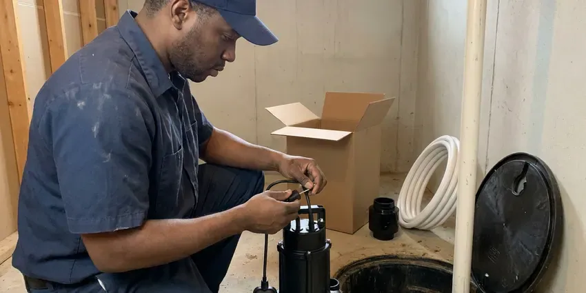
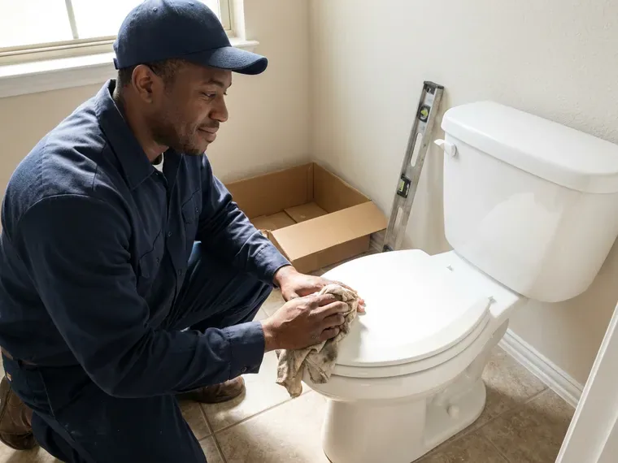
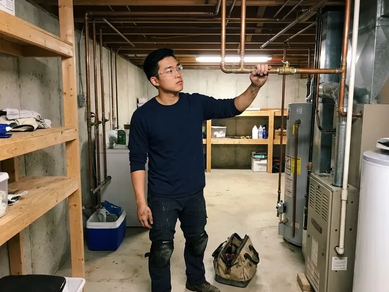

Sewage Ejector Pump Installation in Fargo, ND
HPN Plumbing handles ejector permits in Fargo, ND, including the vent and the inspector's sign-off.
- Tested Before We Leave
- Fast Pump Replacements
- Gas-Tight Basins
- Local Crews
Ejector Pump Service by HPN Plumbing in Fargo, ND
A tech looks at the pit, discharge and vent before giving a number.
Sewage Ejector Pump Installs in Fargo, ND
HPN Plumbing helps Fargo homeowners with basement baths, laundry rooms and wet bars that sit below the main drain. Before choosing a pump, we list the fixtures feeding the pit and measure the lift and the horizontal run. Then we install it. The goal is a pump that runs a short cycle a few times a day and never makes you think about it.
Work we handle every week:
- Check valve and full-port shutoff setups
- Dedicated circuits and float settings for new pumps
- High water alarms, local or app-connected

Additional Plumbing Installation Services in Fargo, ND
We install water heaters, pumps, lines, and fixtures across Fargo, ND with precision workmanship that meets every local code.


Fargo sump pump installation specialists



Customers
Why Choose HPN Plumbing for Sewage Ejector Pump Installation in Fargo, ND?
Ejector pumps move raw waste, so a sloppy install shows up as odors, backups and expensive cleanup. Lids get gasketed at each penetration, the basin vents through the roof, and a check valve keeps the discharge from draining back after each cycle. Sewer gas stays out.
- Solids Rated, Pumps rated for two-inch solids on sewage applications.
- Proven Brands, We install Zoeller and Liberty that have years of field history.
- Local Crews, Our plumbers know local inspections and schedule around them.
Citywide Coverage
Our crews cover Fargo end to end and the towns around it. Older neighborhoods tend to have basements with a sewer that leaves high on the foundation wall, while newer homes on sloped lots often have walkout levels that sit below the street sewer. We know what to look for.
Experienced Team
Each technician at HPN Plumbing has worked on plenty of basement systems, from slab cutting and trenching to venting and electrical. That matters because an ejector job touches concrete, drain piping, vent piping, electrical and sometimes the septic system, and a crew that understands all of it makes fewer mistakes. One crew, all trades.
Safety-First Approach
Our crews follow North Dakota plumbing code on all ejector work, plus each manufacturer's installation rules. Code is the floor, and makers add rules on basin size, float clearance and discharge size, so we follow both to keep the system safe and covered. We meet both.
Trusted Certified Fargo Plumbing Services Professionals
At HPN Plumbing, we take pride in licensed, certified plumbing services throughout Fargo, ND. Those papers on the wall mean something. Every repair, install and maintenance visit follows strict safety and quality rules, and the plumbers doing the work carry recognized industry credentials.
Call Us Now PHCC Plumbing Contractor Recognition
PHCC Plumbing Contractor Recognition Better Business Bureau (BBB) Accreditation
Better Business Bureau (BBB) Accreditation Angi Certified Pro
Angi Certified Pro ISO 9001 Quality Management Certification
ISO 9001 Quality Management CertificationEjector Pump Jobs We Handle in Fargo, ND
Ejector Pump Installation Cost Comparison in Fargo, ND
Replacing a pump in an existing basin costs the least, often done in a few hours. A new system with a basin, slab excavation, venting through the roof, electrical work and an alarm costs more, but it is the only way to add a bathroom below the sewer line in most homes without a macerating unit. Ask for both numbers.

Laundry and Wet Bar Ejector Pumps in Fargo, ND
Below-grade laundry rooms and wet bars send gray water down that still needs to be lifted to the sewer. A compact gray water pump handles it, sized for the 15 or more gallons a washer drops at once, with a lint filter to keep fibers off the impeller. Lint kills small pumps.
Ejector Pump Alarms and Backup Options in Fargo
A high water alarm belongs on every ejector system, since a pump failure can lead to a sewage backup quickly. We install audible alarms with their own power source, or Wi-Fi alarms that text your phone, so you hear about a stuck float while the basin is still filling and not after waste has reached the basement floor. Heavy summer thunderstorms can also overload storm sewers, so backwater valves help protect finished basements. Battery backup is an option.
Residential Sewage Ejector Pump Installation in Fargo
Residential ejector systems in Fargo serve basement bathrooms, lower-level suites and any fixture that sits too low to drain by gravity to the sewer. The setup is a sealed basin, a pump, a float switch, a check valve and a vent. The parts are simple. Most problems come from the install, not the hardware, so we take our time on the vent and the lid seal.
Liberty Pumps Installation in Fargo
Liberty ejector pumps show up on a lot of our installs, with cast iron bodies and two-inch solids handling on most sewage models. Liberty sells packaged systems with basin, lid, pump and check valve already matched, which means less field fitting and a listed assembly for inspection. We still add a shutoff.
Basement Bathroom Ejector Systems in Fargo
Basement bathrooms sit below the building sewer, so every fixture drains to a sealed pit instead of flowing by gravity. We cut the slab, trench the drain lines to the basin, set it, run a two-inch vent up through the house to the roof and pipe the discharge to the building drain with a check valve and shutoff. The slab gets repoured.
Grinder Pump Installation in Fargo
Grinder pumps chop waste into a fine slurry first, which lets them push through small pipe over long distances. They are the right choice when the sewer is far away, uphill or under pressure, like on a pressure sewer system where the pump feeds a shared force main in the street. Grinders run pricier. A standard ejector often covers a basement bath.

Sump Pump vs. Sewage Ejector Pump Installation in Fargo
Sump pumps and ejector pumps seem similar at first but do very different jobs. Sump pumps push groundwater out to the yard, ejectors push sewage to the sewer, and only the ejector pit must be sealed and vented against gas. Never mix the two.
Ejector Pump Plumbers Near You in Fargo, ND
Our plumbers know the permit routine in Fargo, ND, which keeps new ejector systems on schedule. New basins need a rough-in inspection with the vent and drains exposed, so we time the concrete patch around the inspector's visit rather than pouring early and cutting it back open. That usually saves a day.
Searching ejector pump repair near me in Fargo usually means the alarm is going off or the basement drains stopped. HPN Plumbing works out of the area, so we can often get a plumber and a replacement pump to you the same day, and the person who diagnoses it does the install. No hand-offs. One plumber, start to finish.
HPN Plumbing at a Glance
- Fully licensed plumbing team covering Fargo, ND
- Same-day appointments and 24/7 emergency response
- Upfront, flat-rate pricing before work begins
- 4.9-star rated by 408+ North Dakota customers
Fargo Map
Fargo Information
- Population
- 133,188
- Area codes
- 701/402/218
- Service area
- Fargo and communities within 40 miles
- Nearby
- West Fargo, Horace, Wahpeton, Valley City
A good ejector install is sealed, vented and alarmed, with a check valve and shutoff on the discharge for quick service.
Expert Services
Call HPN Plumbing for honest, reliable plumbing from people who know the trade in Fargo, ND.
Our Specialized Plumbing Services in Fargo, ND
At HPN Plumbing, we handle the full list of plumbing services across Fargo, ND. We go from leak detection all the way to full system installations, for homes and commercial buildings, and we do it quickly at a fair price. Take a look at our core services below:


How an Ejector Install Runs in Fargo, ND
What happens from the first call to the last test cycle on your ejector job.
Request a Quote
Call (701) 403-1348 or fill out our form to set up a visit. We will ask a few questions first.
Assessment
In your Fargo home, a plumber measures the lift and run and maps the vent. The basin location gets picked.
Installation
We cut the floor if needed, set the basin and install the pump. Each joint gets sealed and checked.
Frequently Asked Questions About Sewage Ejector Pump Installation in Fargo
Ejector installs in Fargo tend to fall between $2,500 and $5,000. A new basin, the amount of slab cutting, the vent run to the roof and the electrical work are what push a job toward one end or the other. We price it after a visit.
Rarely, because basins, vents, wiring and permits are all part of it. Errors can lead to sewer gas or backups.
Usually, yes. A new ejector system needs a plumbing permit and an inspection of the basin, vent and discharge before the floor is closed. The permit is on us.
A new system usually takes one to two days. It includes the floor cut, excavation, basin and pump, drain and vent connections and the discharge, then the concrete after inspection. Replacements take hours.
Sump pumps remove groundwater and seepage, while ejectors handle sewage from fixtures. Only ejectors handle solids and need sealed, vented pits.
Pump replacements usually take two to four hours. A new system with digging and venting takes a day or two.
Most last seven to ten years with normal use. Flushing wipes and other non-flushables can shorten that a lot.
A pump that runs nonstop, a sounding alarm, sewage odor, gurgling drains and slow drainage. Call quickly before it backs up.
What People Are Saying About Our Plumbing Experts?

Megan L.
Our upstairs tub drained so slowly that every shower turned into a bath. HPN Plumbing pulled a wad of hair out of the stopper and then snaked the line past the trap. Three months later it still drains fast.
Drain Cleaning · Fargo, NDMarcus H.
Grease from the fryer line kept clogging the kitchen drain at my diner. HPN Plumbing hydro jetted the line after closing, showed me the buildup on camera, and set us up on a quarterly cleaning so it does not catch us on a Friday again.
Drain Cleaning · Fargo, NDPaul B.
Our pit pump ran nonstop even in dry weather. The plumber found the check valve was stuck open, so the same water kept cycling back into the pit. New valve, new float switch, done in an hour. It runs quiet now.
Sump Pump · Wahpeton, NDEmily R.
The shutoff valve under our kitchen sink snapped off in my hand on a Sunday morning. HPN Plumbing had someone out by early afternoon. He replaced both angle stops with quarter turn valves and showed me where our main shutoff was, which I honestly did not know.
Plumbing Repair · Jamestown, NDMonica A.
Our water bill nearly doubled in one month with no change in how we used water. The tech checked the meter, heard the leak under the hallway with his equipment, and opened a hole about a foot square. Fixed the same day.
Slab Leak Repair · Jamestown, NDRachel N.
Hard water was leaving white crust on every faucet and our dishwasher was struggling. The tech tested the water, recommended a softener sized for a family of five, and installed it with a bypass valve in one afternoon. The spots on our glasses are gone.
Water Softener · Grand Forks, ND